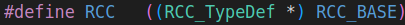
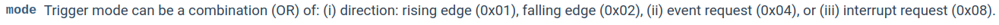

Antes de arrancar con la versión V1 del sistema, tenemos que manejarnos con el versión 0. En esta configuración inicial vamos a programar una serie de funciones genéricas que se usarán a lo largo de todo el proyecto. Esta parte, junto con la versión V1 tiene un desarrollo estimado en unas 2-3 semanas. El inicio del proyecto tiene una curva de aprendizaje mayor; por eso, se te va a guiar en los pasos y la explicación será más extensa. Al acabar este capítulo tendrás listas algunas de las funciones base del proyecto Simone.
Debes tener a mano en todo momento los documentos referenciados y ver los vídeos sugeridos a fin de entender mejor cómo tiene que escribir el código o realizar montajes.
Bibliografía
Fundamentos teóricos de sistemas basados en microcontrolador STM324
Nuestro sistema base versiona el clásico juego de los 80's, Simon. Cuando se presiona el botón de usuario (el azul) durante un tiempo indica que se quiere encender, o apagar, el juego. En ese instante el sistema central encenderá el RGB light (LEDRGB) con la primera secuencia del juego en en nivel fácil (LEVEL_EASY). Cuando acaba de reproducirse (playback) la secuencia, se activa la excitación de las filas del teclado matricial (4x4) de forma iterativa, y se duerme para esperar una interrupción en alguna de las columnas. Cuando se detecta una pulsación, se comprueba si es la correcta. Si lo es, se vuelve a reproducir la secuencia con un nuevo paso añadido. Si no lo es, se enciende el RGB light en rojo para indicar el fallo, y se vuelve a empezar desde el principio. Si se pulsa el botón de usuario durante un tiempo largo, el sistema se apaga. Ve el video demostrativo en Demostración del sistema Simone. La figura del diagrama muestra los 4 bloques que conforman el sistema:
El sistema central con la placa Nucleo-STM32 aloja el microcontrolador STM32F446RE. Se encarga de gestionar, el encendido y apagado del sistema Simone, de interpretar las pulsaciones del usuario.
La placa Nucleo-STM32 también tiene el botón de usuario B1, y el LED de usuario LD2. Estos conforman el sub-sistema de control básico. El botón se usará para detectar pulsaciones que el sistema central interpretará para cambiar encender/ apagar, u otras implementaciones que el quieras hacer en Versión 5. El LED de la placa podrá usarse para saber si hemos realizado correctamente una operación, a modo de feedback.
El teclado matricial. Representa a un dispositivo HW que permite al usuario interactuar con el sistema. En este caso, el teclado matricial es de \(4\times4\) teclas, y se usará para que el usuario introduzca la secuencia que el sistema le va indicando. Se trata de un teclado matricial de membrana en el que se excitan las filas y se irán leyendo las columnas para identificar qué tecla se ha pulsado.
El módulo de actuación. El RGB light está compuesto por un LED RGB que se encenderá en función de la secuencia que toque reproducir en el juego, y para dar feedback al jugador de la tecla que ha pulsado.
Vamos a ir construyendo el proyecto poco a poco. En esta primera fase/versión V1 construiremos parte del sistema central y el sub-sistema de control de encendido/ apagado. Se proporciona la estructura del proyecto sobre el que: desarrollaremos (i) las funciones básicas del sistema para gestión de las GPIO, (ii) la FSM del botón y para el cambio de encendido/ apagado, (iii) testearemos su funcionamiento y, en todo momento documentaremos el código. Para empezar a trabajar con el proyecto:
Se asume que has hecho la primera sesión de introducción y tienes ya montada la estructura para programación multiplataforma con el proyecto project_template.
Si estás trabajando en su ordenador, sigue los pasos para tener el entorno como indica la Guía de instalación 7.
Si ya tenemos todo configurado es suficiente con descargar —o clonar, si vas a trabajar con Git— del repositorio GitHub de la asignatura el versión 0 Simone: https://github.com/sdg2DieUpm/simone, y dejarlo en la carpeta “projects” de la estructura de directorios MatrixMCU.
Árbol de directorios tras descargar el proyecto Simone.
Note
Los puestos del laboratorio utilizan Windows 10. A priori no deberı́a haber conflicto con la configuración del proyecto en VSCode entre máquinas. No obstante, puedes trabajar con tu portátil en el laboratorio si te es más cómodo que llevar y traer el código cada dı́a. Sı́ es obligatorio que traigas tu placa Nucleo-STM32 y el HW necesario.
Abre VSCode y abre el proyecto Simone que está en la carpeta projects. Es muy importante que solo abras esa carpeta, ¡no toda la carpeta projects!. Tiene que ver en VSCode algo como lo que se muestra en la figura del proyecto en VSCode.
Conviene que, si no lo has hecho ya, leas el capítulo “Desarrollando para Nucleo-STM32”4 y te familiarices con la estructura de proyecto y los conceptos.
Proyecto Simone en VSCode.
Verás que el proyecto ya tiene algunos ficheros de partida. Los ficheros de cabecera (.h) definen nuevos tipos de variable, contienen #define, hacen #include de otros ficheros, y declaran variables. Si abres los ficheros port_system.h (ver figura) o stm32f4_system.h verás que son muy verbosos; casi todo son líneas de comentario. La gran mayoría son líneas de comentario interpretables por el generador de documentación Doxygen. Esto se ha hecho así para que puedas desarrollar el código basándote en la API disponible en la página de GitHub Pages: https://sdg2dieupm.github.io/simone/. Tendrás que tener esta página siempre a mano1. Solo tiene algunos ficheros con ejemplo de documentación Doxygen; tú tendrás que completar el de cada función que desarrolles fijándote en los TODO alumnos de las descripciones de función. Más adelante se te indicará cómo utilizarla.
En la carpeta common verás que hay dos ficheros header.h y source.c que indican que han de ser borrados. Están ahí para que veas cómo se estructura del proyecto completo. Bórralos cuando añadas los ficheros de la Versión V1.
Documentación de una función con Doxygen para generar la API.
Podemos empezar ahora con la gestión de las funciones básicas del sistema y las de acceso a las GPIO. En las siguientes secciones vamos a ver (i) un conjunto de funciones genéricas de sistema, (ii) a desarrollar alguna función relacionada con la temporización del sistema, y (iii) funciones de configuración y manejo de las GPIO. Fíjate que dividimos por puntos enumerados las acciones a realizar. Ten esto en cuenta para llevar un orden y no perderse.
Como se comenta en el capítulo “Arranque del sistema” del libro de “Fundamentos prácticos”4, antes de ir a la función main() el microcontrolador debe realizar el boot del sistema. En dicho capítulo se indica que una de las cosas que hace antes es llamar a la función SystemInit(). Lea dicho capítulo del libro.
Las funciones de inicialización no son evidentes y realizan muchas configuraciones de bajo nivel. Se te proporcionan ya codificadas. Todas se encuentran en el fichero stm32f4_system.c. Estas son:
SystemInit(): es llamada directamente por Reset_Handler del fichero startup_stm32f446xx.s. En nuestra implementación, inicializa la FPU (si se usa), configura la memoria externa (si la hay), re-coloca la tabla de vectores de interrupción (si es que la modificamos). En nuestro caso, ninguna de estas tres configuraciones se da.
port_system_init(): IMPORTANTEesta llamada debemos hacerla nosotros al inicio del programa antes de configurar cualquier periférico. Si no la hacemos, no funcionará nada que tenga que ver con el HW. Esta función inicializa los periféricos, la memoria flash y llama a la función de configuración del reloj system_clock_config().
system_clock_config(): IMPORTANTEesta función, por seguridad, no puede ser accedida desde el exterior por lo que su declaración no está en port_system.h, para que no la pueda encontrar nadie. Esta función inicializa el oscilador interno HSI a \(16 MHz\) (valor puesto en el #define HSI_VALUE). Esta función también gestiona la alimentación y configura el temporizador de sistema SysTick a \(1 ms\).
El SysTick es el temporizador de referencia del sistema. Como se ha mencionado, está ya configurado para que genere una interrupción interna cada \(1 ms\). Nosotros debemos decidir qué hacer cada vez que se genere dicha interrupción. En nuestro caso queremos tener una variable que lleve la cuenta de las veces que se ha interrumpido cada \(1 ms\). Es lo que vamos a ver en esta sección.
Conforme está el proyecto Simone descargado, si lo compilamos, no te dará errores, pero no funciona. Posteriormente, completaremos algunos detalles que faltan, aunque intercalaremos con la explicación del código en este capítulo.
Compila el código. Lo podemos hacer de varias maneras. Típicamente, lo haremos en depuración, con la placa conectada, pero por ahora, podemos construir los binarios sin necesidad de la placa. En este orden:
Primero generamos las reglas de compilación con CMake: Menú Terminal→ Run Task... → Run CMake → stm32f446re (Default) → Release (Default)
Esto generará las carpetas build/Release/ con todas las reglas de compilación.
Si no vas a trabajar en modo depuración, es necesario que generes las reglas de compilación en modo Release cada vez que añadas un fichero al proyecto. Si trabajas en modo depuración, no es necesario, se hace automáticamente tras el Clean.
Seguidamente, compilamos el código: Menú Terminal→ Run Task... → Build → stm32f446re (Default) → Release (Default) → main
Note
El modo Release se usa cuando queremos generar los ficheros binarios que se ejecutarán en el dispositivo, pero no queremos depurar. Se usa típicamente cuando no tenemos la placa o cuando se genera el código final de un proyecto que pasa a producción.
El modo Debug se usa cuando queremos depurar el código, y necesitamos tener el dispositivo conectado. En este caso, el compilador añade información extra al código para que el depurador pueda seguir el código línea a línea. Esto hace que el código sea más lento y ocupe más memoria. En el modo Release no se añade esta información extra. Normalmente trabajarás en modo Debug.
En el fichero stm32f4_system.c, tenemos la variable global msTicks. msTicks es una variable muy importante que hemos definido para llevar la cuenta (ticks) en milisegundos del sistema, y está controlado por SysTick (ver capítulo de “Circuito de reloj” del libro de Fundamentos Teóricos 4). El valor guardado en msTicks se actualiza cada vez que el reloj de sistema SysTick genera una interrupción. Puesto que las interrupciones podemos deshabilitarlas —como en los modos de bajo consumo—, el valor almacenado NO será un valor absoluto desde que se inició el sistema, sino un valor que podremos tener en cuenta de forma relativa para contar lapsos de tiempo. Trabajaremos con esta variable en las siguientes secciones.
La función port_system_delay_ms nos podría ser de ayuda en algún momento. Como dice la API, esta función hace una espera activa durante ms milisegundos, i.e., el programa se bloquea en el while$\{\}$ que no hace nada durante un tiempo dado. Esta función, para saber cuántos milisegundos han pasado, necesita hacer la resta entre el instante actual y la referencia que coge al inicio tickstart.
¿Cómo sabemos cuál es el instante actual? Pues con el valor de la variable global msTicks. Esta variable es global y estática (static uint32_t msTicks), por lo que es accesible por todas las funciones de este fichero solo2. Esta "librería" de sistema stm32f4_system.c ha de proporcionar al resto del código diversas funcionalidades, y una de ellas es la de dar información del tiempo de sistema msTicks. Para ello —y puesto que la variable no es accesible desde el exterior por ser estática—, nos proporciona la función port_system_get_millis().
La función port_system_delay_until_ms() recibe la referencia del tiempo actual y hace una espera activa hasta ms después. Nos puede ser también de utilidad durante el proyecto. Esta función toma la referencia de tiempos llamando a port_system_get_millis().
La función port_system_get_millis() está declarada en port_system.h y, aunque está implementada, no hace nada. Según la API, dicha función simplemente devuelve la cuenta del sistema en milisegundos. Sabemos que ha de devolver un entero de 32 bits sin signo (uint32_t), es decir, tenemos que devolver el valor de la variable msTicks. Así pues, modifique la función para que quede como:
uint32_tport_system_get_millis(){returnmsTicks;/* ms */}
y como ya está documentada la función en el .h, no tenemos que poner la documentación Doxygen aquí.
En casi todos los lenguajes de programación, cuando una librería nos proporcione una función get que devuelve un parámetro encontraremos, típicamente, un set, para poder modificar dicho parámetro. Así pues, encontramos la función port_system_set_millis().
Esta función también está declarada en port_system.h e implementada, pero sin desarrollar. Según la API, dicha función simplemente recibe la cuenta del sistema en milisegundos que queremos poner. ¿Por qué íbamos a querer modificar la cuenta de tiempos del sistema? Bueno, nuestra aplicación podría tener algún criterio relacionado con ello, pero esta función existe porque es la que la ISR usa para modificar el contador msTicks. Ya que la ISR está en otro fichero (el fichero interr.c) y no tiene acceso al contador, ha de hacerlo llamado a una función de stm32f4_system.c que sí pueda acceder; esta es nuestra función port_system_set_millis().
En este punto te habrás dado cuenta que hay funciones que empiezan por "port_system_”. Esto es una convención de nomenclatura, un estilo. Si seguimos un criterio, nos puede ser fácil identificar de dónde vienen las funciones y qué hacen solo con su nombre. Estas en particular, nos indican que las funciones son "portables" (port_) —por lo que estarán en el directorio port, y no en el common—, y que son funciones centrales del sistema (system, por abreviar).
Como reciben y/ o devuelven variables estándar (uint32_t, void, …), no tienen nada que ver con el microcontrolador en particular, están en declaradas en los ficheros .h de port/include, pero su implementación está en stm32f4_system.c en stm32f4/src. Si tuviésemos otro microcontrolador, podríamos reutilizar estas funciones sin modificar el prototipo y solo cambiando la implementación.
msTicks está definida y se usa cuando se llama a las funciones port_system_set_millis() para darle un valor, y port_system_get_millis() para leerlo, pero ¿quién llama a estas funciones para actualizar el valor de msTicks? Bueno, estrictamente nadie las llama, saltan ahí por hardware, pues es la ISR del SysTick. Vamos a ver cómo funciona y a completarla.
En el documento interr.c encontrarás la ISR del SysTick, SysTick_Handler. Recuerda que este nombre no lo elegimos nosotros, sino que está definido en el fichero de ensamblador de cada dispositivo; startup_stm32f446xx.s para el microcontrolador STM32F446RE. Dentro de la ISR vamos a usar las funciones port_system_get_millis() y port_system_set_millis() para leer y escribir el valor de msTicks.
Llama a la función port_system_get_millis() en la ISRSysTick_Handler() para leer el valor actual de msTicks y guárdalo en una variable local. No olvides declarar la variable.
Llama a la función port_system_set_millis() en la ISRSysTick_Handler() para escribir el valor de msTicks con el valor anterior incrementado en 1.
Ya tenemos hecho el punto 1 de la ISRSysTick_Handler() (ver figura de la API), y que estaba pendiente de hacer (TODO alumnos).
Podemos comprobar que el programa sigue compilando correctamente y viendo que se ha generado el fichero ejecutable .elf en la carpeta bin, donde se guardan los binarios generados a ejecutar por el microcontrolador. Tendremos un mensaje en la terminal similar al que se muestra en la figura de compilación.
Compilación exitosa generando el ejecutable `.elf`.
En esta sección vamos a comprender el código de las funciones de configuración y manejo de las GPIOs y a completar algunas de ellas. Con estas funciones conseguiremos inicializar el modo (i.e., entrada, salida, o alternativo) de cada pin de la GPIO, configurar interrupciones, y leer y escribir en los puertos.
Es muy importante que tengas a mano el capítulo “Configuración de GPIOs” del libro de “Fundamentos teóricos”4. En esta sección vamos a trabajar con registros. Todo lo que vamos a ver es un repaso de lo que tiene ya en los ejemplos del libro, pero debes asegurarte de entender lo que hace y saber leer las tablas que en él se muestran. No se te va a pedir manejar el reference manual ni el datasheet del microcontrolador, aunque también puedes mirar en ellos si quieres más detalle sobre los registros.
A lo largo del proyecto vamos a configurar varias GPIOs, como las del botón, el teclado, o los LED. Así, para no hacer el código repetitivo, se proporcionan funciones genéricas que reciben como entrada, al menos, el puerto y el pin que quieren configurar. Para ver las funciones sitúate en el fichero stm32f4_system.c, bajo el comentario // GPIO RELATED FUNCTIONS. La lista de funciones que se proporcionan y que vamos a ver es:
¿Por qué las funciones ahora se llaman stm32f4_system_gpio\_... y no port_system_gpio\_...? Porque estas funciones reciben y devuelven tipos de datos (estructuras, punteros, …) que son específicas del microcontrolador STM32F446RE, y no son portables a otros microcontroladores. Por eso, están declaradas en el fichero stm32f4/include/stm32f4_system.h y no en port/include/port_system.h. Si tuviésemos otro microcontrolador, tendríamos que incluirla en su carpeta correspondiente y adaptar el prototipo de la función.
Esta función configura el modo de la GPIO: entrada, salida o función alternativa, y el tipo de conexión a la que está el pin (conectada a resistencias de pull-up, o de pull-down). Sirva este primer punto para establecer las bases de cómo se codifican las funciones. Tengamos a mano la entrada de la API. La figura muestra la descripción de la anatomía de una entrada de la API.
Vista de la API para la función `stm32f4_system_gpio_config`.
Como dice el punto 1 de la API, lo primero que se hace es habilitar el reloj de las GPIO. Esto se indica en los ejemplos del capítulo “Configuración de GPIOs” del libro como:
Esta línea de código activa el bit RCC_AHB1ENR_GPIOAEN (GPIOA) del registro RCC_AHB1ENR. Vamos por partes:
El RCC es el controlador de relojes. En el fichero stm32f4xx.h3, CMSIS lo define como un puntero a una estructura de tipo RCC_TypeDef: . Esta estructura también la define CMSIS en el mismo fichero. Tiene muchos campos. Cada campo es un registro del controlador. Bien, pues uno de esos registros es el RCC_AHB1ENR.
Recuerda de los vídeos de SDG1 que para acceder a los campos de una estructura tenemos el punto (.), y la flecha (->). Usamos punto (.) cuando tenemos acceso directo a la estructura, y usamos flecha (->) cuando lo que tenemos es un acceso indirecto, un puntero. Esta es nuestra situación, porque RCC está definido como puntero, y por eso, para acceder al campo que representa al registro hacemos: RCC->AHB1ENR.
Aplica toda esta lógica para cualquier registro. Todos están definidos por CMSIS en el fichero stm32f4xx.h, y todos son punteros, por lo que siempre accederemos a los registros de los periféricos con -> (flecha).
El fabricante nos indica en el manual de referencia que el acceso a los registros se hace, generalmente, de 32 en 32 bits por lo que no se pueden seleccionar bits particulares de un registro —como indica el libro en un ejemplo—, por eso usamos máscaras, en este caso con el operador | (OR) sobre todo el registro para activar el/los bit/s deseado/s.
El RCC_AHB1ENR_GPIOAEN es una máscara que está definida en stm32f4xx.h, y vale 0x01. Gran parte de los bits de los registros, si no todos, están definidos en este fichero. Para cualquier registro, tú puedes decidir usarlos, o definirte tus propias máscaras si te es más cómodo.
Ya estamos preparados para ver qué hacen las funciones. Conviene que prestes atención al código y a las explicaciones aquí dadas, pues te ayudará en las próximas versiones del proyecto. De igual modo, no dejes de leer el capítulo “Configuración de GPIOs” del libro de “Fundamentos teóricos”4, ni de ver el vídeo [MatrixMCU - examples] Blink LED y manejo de proyecto.
En el fichero stm32f4_system.h encontramos el prototipo de la función. En el fichero stm32f4_system.c encontramos su implementación.
Dentro de la función vemos que el código activa el bit RCC_AHB1ENR_GPIOAEN, RCC_AHB1ENR_GPIOBEN, o RCC_AHB1ENR_GPIOCEN, en función de si el valor de port es GPIOA, GPIOB, o GPIOC, respectivamente. Esto completa el primer punto de la API.
El pinout de Arduino no da acceso a ningún pin que no sea de estos tres puertos. El pinout de Morpho sí da acceso a algunos del GPIOH, y uno del GPIOD. Si en tus implementaciones de la Versión 5 vas a utilizar alguno de estos pines, necesitarás incluirlos en esta función de configuración. Mira la sección “Conectores y zócalos de la placa” para confirmarlo.
Se configura el modo del puerto (registro MODER) como se hace en la sección “GPIO port mode register (GPIOx_ MODER)” del libro.
Limpia lo que hubiese escrito en las posiciones del registro MODER con la máscara creada.
Se usa la máscara base GPIO_MODER_MODER0 definida por CMSIS en el fichero stm32f446xx.h. Esta máscara vale 0x03UL, i.e., 0b11 en binario, unsigned (U, no tiene signo), long (L, de 32 bits). Es muy útil usar estas máscaras base para limpiar los bits de los registros.
Para limpiar los bits de un registro o variable, se hace una AND (&) con la máscara negada.
Escribe en el registro de modo el valor de la variable mode —que es el argumento recibido y podrá tomar valores STM32F4_GPIO_MODE_IN— STM32F4_GPIO_MODE_OUT, STM32F4_GPIO_MODE_AF, o STM32F4_GPIO_MODE_AN. Estos son los valores que se han definido en el fichero stm32f4_system.h, y que valen 0x00, 0x01, 0x02, y 0x03, respectivamente.
Para escribir en las posiciones correctas del registro, se usa el desplazamiento con la variable pin. La variable pin se multiplica por 2U para asegurar que el desplazamiento es de 2 en 2 bits.
Para poner a 1 los bits de un registro o variable, se hace una OR (|) con el valor deseado.
Ya se ha hecho el segundo punto de la API de esta función.
De la misma forma, se configura el tipo de conexión pull-up/ down del pin. El código es más genérico que el que se explica en la sección “GPIO port pull-up/pull-down register (GPIOx_PUPDR)” del libro. Simplemente, se repite los pasos anteriores pero esta vez sobre el registro PUPDR: crea la máscara, limpia y escribe en el registro.
Ya se ha hecho el último punto de la API de esta función.
Esta función configura el modo de la GPIO como función alternativa. Para ello sigue las indicaciones de la API. A saber, lo que hace es:
Define una máscara base de 4 bits (0x0F) para seleccionar los bits del registro AFR que se van a modificar.
Esta máscara se desplaza 4 por el valor de la variable pinmódulo 8. 4 es el ancho de cada campo del registro AFR. El módulo 8 hace que el valor de pin se mantenga entre 0 y 7, y así, no nos salgamos del ancho del registro, que tiene 32 bits.
Se limpian los bits del registro AFR con la máscara creada.
Se selecciona el registro AFRL (low) o AFRH (high) en función de: el valor de la variable pindividido entre 8. Como pin solo puede tomar valores entre 0 y 15, la división entre 8 nos da 0 o 1. Esto hace que el valor resultante seleccione el registro AFRL o AFRH, respectivamente.
Se escribe en el registro AFR el valor de la variable alternate.
Vamos a ver ahora esta función que configura el pin dado para generar interrupciones externas. Lee y ten a mano el capítulo “Interrupciones” del libro. El ejemplo te servirá de mucho. Esta función nos servirá para enterarnos cuando pulsemos el botón y realizar alguna acción en nuestro sistema. Vamos a seguir los cuatro puntos de la API de esta función.
Lo primero que hace es habilitar el controlador de configuración del sistema que, como nos indica la API, sirve para controlar la línea de interrupciones externas hacia las GPIO. Para ello, se activa el bit SYSCFGEN del registro APB2ENR del RCC. De nuevo, podemos definir nuestra propia máscara para dicho bit mirando el registro, o usar la RCC_APB2ENR_SYSCFGEN de CMSIS que nos indica la API.
Lo siguiente que hace es asociar la interrupción externa al puerto. Este código puede hacerse de muchas maneras, unas más eficientes que otras, aunque no nos preocupamos de eso ahora.
Como se indica en el libro, dependiendo del pin y el puerto, tendremos que elegir un registro u otro para realizar la asociación. Como se trata de una función genérica y no sabemos qué valores nos van a llegar, se hace la implementación para cada pin y puerto según sea el valor de la variable pin y port. Así pues:
si el valor de pin está entre 0 y 3, se trabaja sobre el registro SYSCFG_EXTICR1 (SYSCFG->EXTICR[0]),
si el valor de pin está entre 4 y 7, se trabaja sobre el registro SYSCFG_EXTICR2 (SYSCFG->EXTICR[1]),
si el valor de pin está entre 8 y 11, se trabaja sobre el registro SYSCFG_EXTICR3 (SYSCFG->EXTICR[2]), y
si el valor de pin está entre 12 y 15, se trabaja sobre el registro SYSCFG_EXTICR4 (SYSCFG->EXTICR[3]).
Se define una máscara base de 4 bits (0x0F) para seleccionar los bits del registro EXTICRx que se van a modificar.
Esta máscara se desplaza 4 por el valor de la variable pinmódulo 4. 4 es el ancho de cada campo del registro EXTICRx. El módulo 4 hace que el valor de pin se mantenga entre 0 y 3 y, así, no nos salgamos del ancho del registro, del que se usan 16 bits.
Se limpian los bits del registro EXTICRx con la máscara creada.
Se selecciona el registro EXTICR1, EXTICR2, EXTICR3, o EXTICR4 en función de el valor de la variable pindividido entre 4. Como pin solo puede tomar valores entre 0 y 15, la división entre 4 nos da 0, 1, 2 o 3. Esto hace que el valor resultante seleccione el registro EXTICR1, EXTICR2, EXTICR3 o EXTICR4, respectivamente.
Se escribe en el registro EXTICRx el valor que corresponda para cada puerto. Si port es GPIOA, escribimos el valor 0, si es GPIOB, escribimos el valor 1…, como indica la “Figura” del libro.
A continuación se selecciona la dirección de disparo de la interrupción: en flanco de subida, de bajada, o ambos.
Se activa el bit del pin correspondiente en el registro RTSR (rising) si el valor de la variable mode es 0x01, indicando que la interrupción ha de notificarse cuando ocurra un flanco de subida.
El número del pin, pin, actúa como índice de una máscara de 1 solo bit, para lo que se usa la macro dada BIT_POS_TO_MASK(pin) para actuar sobre los registros.
Se hace lo propio con el registro FTSR (falling) si el valor de la variable mode es 0x02, indicando que la interrupción ha de notificarse cuando ocurra un flanco de bajada.
Si el valor es 0x03 escribe en ambos registros: subida y bajada.
¿Por qué estos valores? Porque así lo hemos decidido, podrían ser otros cualquiera. ¿Y cómo sabemos que son dichos valores? Porque la API nos dice los valores que podemos darle a la variable mode:
Distintos valores que podemos darle a la variable mode.
Es un consenso con nosotros mismos. Se ha añadido en stm32f4_system.h un conjunto de #define para estos valores a fin de que el código sea más inteligible y no haya valores “a pincho”. Se usan nombres representativos como:
#define STM32F4_TRIGGER_RISING_EDGE
#define STM32F4_TRIGGER_FALLING_EDGE
#define STM32F4_TRIGGER_BOTH_EDGE
Por último, de nuevo codificado en el valor de mode, se actúa sobre los registros EXTI_EMR o EXTI_IMR activando el bit correspondiente según si el valor de mode es 0x04 o 0x08, respectivamente. También puede darse el caso de que se quieran activar ambos a la vez. No son excluyentes. En este caso, como en el anterior, activaríamos ambos (se puede añadir un tercer #define híbrido, o realizar dos llamadas a la función).
Se añade en stm32f4_system.h un conjunto de #define con nombres representativos como:
#define STM32F4_TRIGGER_ENABLE_EVENT_REQ
#define STM32F4_TRIGGER_ENABLE_INTERR_REQ
Ya hemos visto cómo está programada la función. Esta ha sido más compleja, pero esperemos que ya vaya cogiendo soltura con los registros.
El objetivo de esta función es establecer el nivel de prioridad y subprioridad, y a la vez habilitar la interrupción de una línea externa dada. La llamaremos cuando queramos configurar un pin como entrada y que genere interrupciones. Internamente llama a una macro de CMSIS que controla los registros de interrupción. Estos registros no aparecen en el reference manual porque son del core de Cortex-M4. Es muy importante habilitar la interrupción o nunca saltará la ISR.
El objetivo de esta función es deshabilitar la interrupción de una línea externa dada. La usaremos cuando no queramos que nos interrumpa un pin/ línea configurado como entrada y previamente habilitado. Mientras está desactivada, no saltará la ISR asociada a dicha línea.
Esta función será llamada cuando queramos leer el valor digital de un pin. Leeremos un ‘1’ o un ‘0’ lógico, por eso, la función devuelve bool. Vamos a seguir los dos puntos de la API de esta función para que la implementes tú mismo/a.
En stm32f4_system.h declara el prototipo de la función según indica la API. De esta forma la función se hace pública y podrá ser llamada desde cualquier otro fichero.
En stm32f4_system.c escribe el prototipo de la función y abre llaves. Vamos a seguir los pasos que se indican en la API.
Lee el valor del registro IDR de la GPIO como se muestra en la sección “GPIO port input data register (GPIOx_IDR)” del libro.
El puerto es el port dado.
Usa la macro BIT_POS_TO_MASK(pin) para crear la máscara según el pin dado.
Tenemos que devolver una variable de tipo bool, por lo que tendremos que hacer un cast del resultado leído del registro, ya que el registro es una variable de 32 bits. Puedes utilizar una variable intermedia para cargar el valor del registro, o hacerlo como en el ejemplo.
Para leer el valor de un bit en un registro hacemos el producto bit a bit (&).
Devuelve el valor leído.
En stm32f4_system.h documenta la función con Doxygen ayudándose con la API. Recuerda que tienes el vídeo "[MatrixMCU] Documentación de código con Doxygen” con las bases para documentar y generar tu propia API.
Ya tenemos la función que nos permite leer valores digitales del exterior dado un puerto y un pin. Comprueba que compila sin errores: Menú Terminal→ Run Task... → Build → stm32f446re (Default) → Release (Default) → main.
A continuación vamos a desarrollar la función que será llamada cuando queramos escribir un valor digital en un pin. Escribiremos ‘1’ o ‘0’ lógicos. Vamos a seguir los dos puntos de la API de esta función.
En stm32f4_system.h declara el prototipo de la función según indica la API.
En stm32f4_system.c escribe el prototipo de la función y abre llaves.
Escribe el valor correspondiente en el registro BSRR de la GPIO como se muestra en la sección “GPIO port bit set/reset register (GPIOx_BSRR)” del libro.
El puerto es el port dado.
Si el valor de la variable value es true activamos el bit correspondiente. Puedes usar la macro BIT_POS_TO_MASK(pin) para crear la máscara según el pin dado. Para evitar posibles condiciones de carrera, utilizamos el registro GPIOx_BSRR y no el GPIOx_ODR.
Si el valor de la variable value es false limpiamos el bit correspondiente. Lo limpiamos poniendo a uno el bit correspondiente en el registro GPIOx_BSRR; así funciona este registro .
En stm32f4_system.h documenta la función con Doxygen ayudándote con la API.
Ya tenemos la función que nos permite escribir valores digitales dado un puerto y un pin. Comprueba que compila sin errores.
Esta función es muy cómoda cuando queremos invertir el valor de un pin. Si estaba en alto (‘1’ lógico), que pase a bajo (‘0’ lógico), y viceversa. Esta función usa las dos anteriores; lee el valor del pin y escribe el opuesto. Seguimos la API.
En stm32f4_system.h declara el prototipo de la función según indica la API.
En stm32f4_system.c escribe el prototipo de la función y abre llaves.
Lee el valor del pin y el puerto. Puedes servirte de la función anteriormente implementada.
Escribe en el pin y el puerto el valor contrario al leído. Puedes servirte de la función anteriormente implementada.
Puedes definir utilizar las macros HIGH y LOW si te resulta más cómodo de interpretar que true y false.
En stm32f4_system.h documenta la función con Doxygen ayudándote con la API.
Ya hemos tenemos la función que nos permite alternar el valor de un pin. Comprueba que compila sin errores. Podrás probar estas funciones junto con el test unitario del PORT de la versión 1.
También hemos acabado con las funciones básicas del sistema. Estas funciones se usarán en las distintas versiones del proyecto, por eso es tan importante que las hiciésemos lo primero y que las entienda. Además, nos ha servido para calentar en esto de la programación de bajo nivel (baremetal). A continuación seguiremos con la implementación HW del botón y su máquina de estados.
Aunque tú mismo puedes re-generar dicha API localmente como se explica en la guía 7. ↩
La función port_system_delay_ms() sí podría acceder a la variable msTicks directamente, aunque con llamada a port_system_get_millis() es más ortodoxo y así es como lo harían, inevitablemente, funciones de otros ficheros. ↩
El fichero stm32f4xx.h se encuentra en el árbol de directorios de la toolkit MatrixMCU en: MatrixMCU/drivers/stm32f4xx/CMSIS/Device/ST/STM32F4xx/Include/stm32f446xx.h↩
Josué Pagán Ortiz, Pedro José Malagón Marzo, Román Cárdenas Rodríguez, and Juan José Gómez Valverde. Fundamentos teóricos de sistemas basados en microcontrolador STM32. Sistemas Digitales II, Sistemas Electrónicos. Josué Pagán Ortiz, Madrid, March 2025. URL: https://oa.upm.es/88460/. ↩↩↩↩↩↩
Josué Pagán Ortiz, Pedro José Malagón Marzo, Román Cárdenas Rodríguez, Amadeo de Gracia Herranz, Sergio Esteban Romero, and Daniel Capellán Martín. Guía de instalación de herramientas para compilación multiplataforma en C. Sistemas Digitales II, Sistemas Electrónicos. Josué Pagán Ortiz, Madrid, March 2025. URL: https://oa.upm.es/92376/. ↩↩
Michael Barr. Embedded C Coding Standard. Netrino, 2009. ↩
{kind=link}


{kind=link}


{kind=link}
{kind=link}